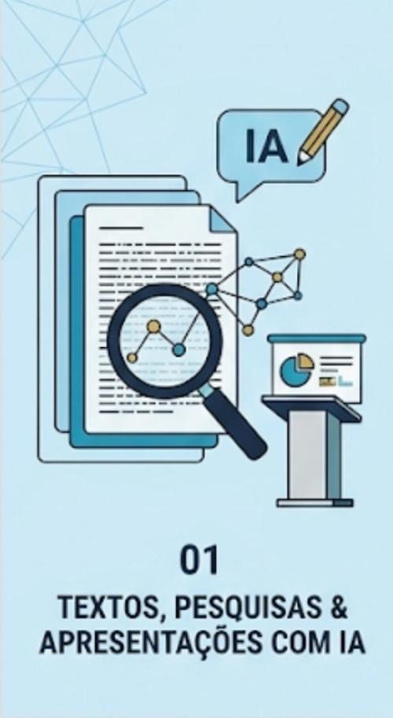
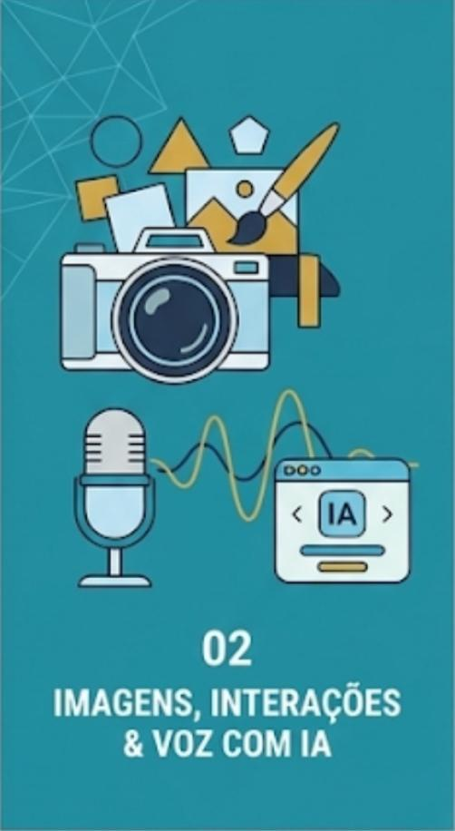
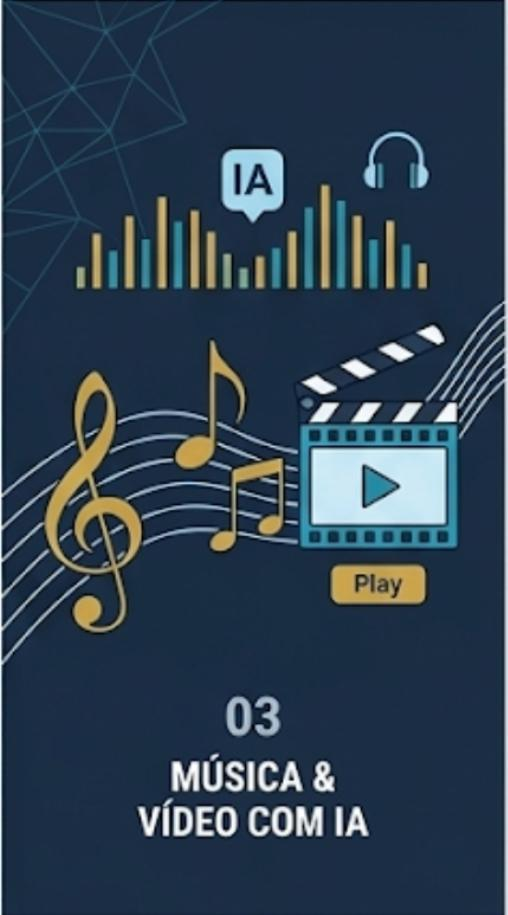

Learn
Students explore practical AI tools for writing, research, presentations, voice, music, images, and video.
Extracurricular AI education for the next generation
AI Steps helps middle and junior high school students explore artificial intelligence through real projects, team collaboration, guided mentoring, and final presentations that build confidence.
What is AI Steps?
Students explore practical AI tools for writing, research, presentations, voice, music, images, and video.
Every module is project-based, helping students transform ideas into useful and creative outcomes.
Students finish by pitching their work, practicing communication, reflection, and teamwork.
Learning journey
The initial path is organized into three modules, each ending with a final pitch and a concrete student output.

01Students learn how to brainstorm, investigate topics, organize ideas, and communicate clearly with AI support.

02Students experiment with visual creation, multimodal prompting, and AI-powered voice interactions.

03Students build richer creative projects using sound, storytelling, and video-based outputs.
Methodology
CBL is the backbone of the experience: students start with a relevant challenge, investigate with intention, and finish by presenting an original solution.
Students begin with meaningful prompts that connect learning to relevant situations and genuine curiosity.
They test AI tools, compare results, and refine their understanding with facilitator support.
Learning becomes visible through projects, collaboration, and presentations that demonstrate progress.
Instead of only watching demonstrations, students actively frame questions, test ideas, and defend their solutions. That makes the AI learning feel deeper, more memorable, and more transferable.
Flexible formats
Classes can happen inside the school environment with direct facilitator support and strong group interaction.
Synchronous online classes bring students together with schedule flexibility and access to recordings for review.
Student outcomes
The program is structured so students can revisit concepts, improve their work, and share what they have built.
Students can review key concepts anytime and reinforce learning at their own pace.
Each module includes support that helps students refine both ideas and execution.
Students finish with a visible record of their progress, creativity, and practical AI use.
FAQ
AI Steps is designed for students in the middle to junior high school years who are ready to learn by building, experimenting, and presenting ideas.
No. Students also practice creativity, critical thinking, collaboration, communication, and responsible use of AI.
No prior experience is required. The program is guided step by step and grows in complexity across the modules.
Reach out by email and the AI Steps team can help you understand formats, onboarding, and the best next step.
Ready to begin?
Contact the team to learn more about the program, school partnerships, and the best format for your family or community.